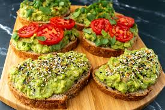

Avocado Toast

Description
Avocado toast is a simple yet delicious dish consisting of mashed or sliced avocado
spread over toasted bread, often seasoned with salt, pepper, and lemon juice. It can be
customized with various toppings like eggs, tomatoes, radishes, feta cheese, or chili
flakes for added flavor and texture. Popular for its creamy texture and health benefits,
avocado toast is a go-to breakfast or snack packed with healthy fats and nutrients.
Ingredients
- 2 slices whole-grain bread
- 1 Avocado
- 1 ½ teaspoons extra-virgin olive oil
- ½ lemon, juiced, or to taste
- ½ teaspoon salt
- ½ teaspoon ground black pepper
- ½ teaspoon onion powder
- ½ teaspoon garlic powder
Ingredients
- Toast bread in a toaster or toaster oven
- Mash avocado, parsley, olive oil, lemon juice, salt, black pepper, onion powder,
and garlic powder together in bowl using a potato masher; spread on top of toast slices
Home